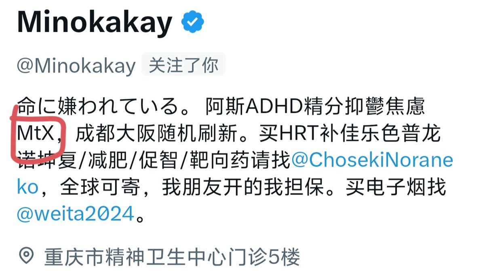

Winit420 #天苑四
@winterfruit_1
@OverSpring_wiki @520illusion @OverSpeed_Wiki2 @bghtnya @Minokakay

OverSpring Wiki
@OverSpring_wiki
@520illusion @OverSpeed_Wiki2 @bghtnya @Minokakay Mino什么时候变男同了？
哦对，mino已经把开专的地址写在这边了哦 https://t.co/eI85CDOnc7